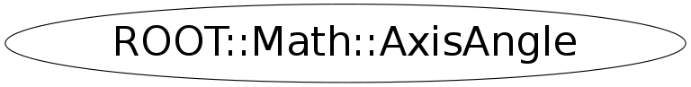

class ROOT::Math::AxisAngle
AxisAngle class describing rotation represented with direction axis (3D Vector) and an
angle of rotation around that axis.
@ingroup GenVector
Function Members (Methods)
public:
private:
| static double | Pi() |
| void | RectifyAngle() |
Class Charts
{kind=link}
{kind=link}
{kind=link}
{kind=link}

Function documentation
AxisAngle(const AnyVector & v, Scalar angle)
Construct from a non-zero vector (x,y,z) and an angle.
Precondition: the Vector needs to implement x(), y(), z(), and unit()
{ } AxisAngle(IT begin, IT end)
Construct given a pair of pointers or iterators defining the
beginning and end of an array of four Scalars, to be treated as
the x, y, and z components of a unit axis vector, and the angle
of rotation.
Precondition: The first three components are assumed to represent
the rotation axis vector and the 4-th the rotation angle.
The angle is assumed to be in the range (-pi,pi].
The axis vector is automatically normalized to be a unit vector
{ SetComponents(begin,end); }void Rectify()
The compiler-generated copy ctor, copy assignment, and dtor are OK.
Re-adjust components to eliminate small deviations from the axis
being a unit vector and angles out of the canonical range (-pi,pi]
explicit AxisAngle(const ROOT::Math::AxisAngle& )
======== Construction From other Rotation Forms ==================
Construct from another supported rotation type (see gv_detail::convert )
{gv_detail::convert(r,*this);}AxisAngle & operator=( OtherRotation const & r )
Assign from another supported rotation type (see gv_detail::convert )
void SetComponents(double* begin, double* end)
======== Components ==============
Set the axis and then the angle given a pair of pointers or iterators
defining the beginning and end of an array of four Scalars.
Precondition: The first three components are assumed to represent
the rotation axis vector and the 4-th the rotation angle.
The angle is assumed to be in the range (-pi,pi].
The axis vector is automatically normalized to be a unit vector
void GetComponents(IT begin, IT end)
Get the axis and then the angle into data specified by an iterator begin
and another to the end of the desired data (4 past start).
XYZVector operator()(const ROOT::Math::AxisAngle::XYZVector& v) const
return ! operator==(rhs)
void RectifyAngle()
AxisAngle operator*(RotationX const & r1, AxisAngle const & r2)
Multiplication of an axial rotation by an AxisAngle